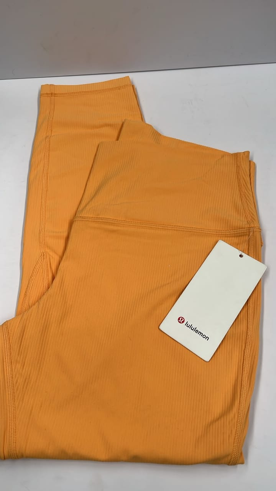
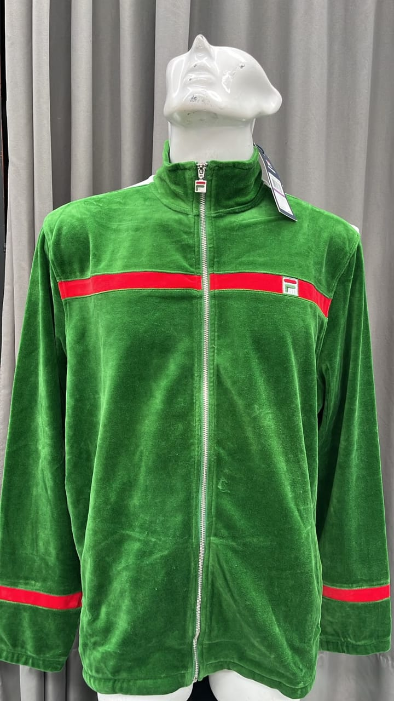

¿Cuántas horas pierdes en esto?
Quitar el fondo
Cambiar el color
12 láminas, un toque
Tu tienda en línea
Tu centro de operaciones
Hechas a tu medida





PNG sin fondo
Las sombras se quedan
135 textos acomodados
Reparto en vivo
Sin internet, también
Grupo Mazi
Si no existe la herramienta, se construye.